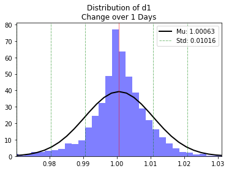
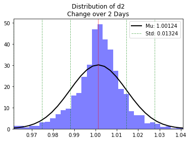
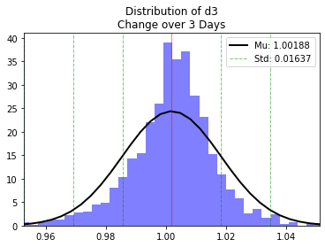
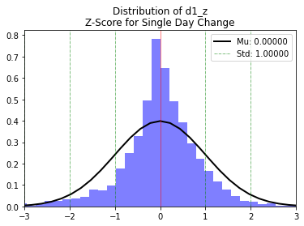
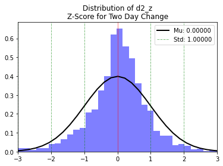
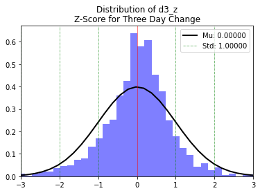

Load Stockmarket Data
Contents
import pandas as pd
import matplotlib.pyplot as plt
import numpy as np
from scipy.stats import norm
import matplotlib.pyplot as plt
import datetime
import math
import matplotlib.pyplot as plt
import keras
import pandas as pd
import numpy as np
from keras.models import Sequential
from keras.layers import Dense
from keras.layers import LSTM
from keras.layers import Dropout
from keras.layers import *
from sklearn.preprocessing import MinMaxScaler
from sklearn.metrics import mean_squared_error
from sklearn.metrics import mean_absolute_error
from sklearn.model_selection import train_test_split
from keras.callbacks import EarlyStopping
---------------------------------------------------------------------------
ModuleNotFoundError Traceback (most recent call last)
Input In [1], in <cell line: 1>()
----> 1 import pandas as pd
2 import matplotlib.pyplot as plt
3 import numpy as np
ModuleNotFoundError: No module named 'pandas'
print("Num GPUs Available: ", len(tf.config.list_physical_devices('GPU')))
Num GPUs Available: 1
Load Stockmarket Data¶
sp500 = pd.read_csv("sp500.csv")
spy = pd.read_csv("spy.csv")
sp500.head()
| date | open | high | low | close | close_adj | volume | |
|---|---|---|---|---|---|---|---|
| 0 | 1/18/2012 | 1293.65 | 1308.11 | 1290.99 | 1308.04 | 1308.04 | 4.096160e+09 |
| 1 | 1/19/2012 | 1308.07 | 1315.49 | 1308.07 | 1314.50 | 1314.50 | 4.465890e+09 |
| 2 | 1/20/2012 | 1314.49 | 1315.38 | 1309.17 | 1315.38 | 1315.38 | 3.912620e+09 |
| 3 | 1/23/2012 | 1315.29 | 1322.28 | 1309.89 | 1316.00 | 1316.00 | 3.770910e+09 |
| 4 | 1/24/2012 | 1315.96 | 1315.96 | 1306.06 | 1314.65 | 1314.65 | 3.693560e+09 |
spy.head()
| date | open | high | low | close | close_adj | volume | |
|---|---|---|---|---|---|---|---|
| 0 | 1/18/2012 | 129.31 | 130.84 | 129.08 | 130.77 | 107.98 | 163395200.0 |
| 1 | 1/19/2012 | 131.22 | 131.57 | 130.80 | 131.46 | 108.55 | 126328900.0 |
| 2 | 1/20/2012 | 131.24 | 131.95 | 130.92 | 131.95 | 108.95 | 138230200.0 |
| 3 | 1/23/2012 | 131.51 | 132.25 | 130.98 | 131.61 | 108.67 | 129295800.0 |
| 4 | 1/24/2012 | 130.80 | 131.50 | 130.60 | 131.46 | 108.55 | 103083300.0 |
Feature Engineering¶
data = spy
data['d1'] = data.close_adj/data.close_adj.shift(1)
data['d2'] = data.close_adj/data.close_adj.shift(2)
data['d3'] = data.close_adj/data.close_adj.shift(3)
data = data.drop([0,1,2])
data.isna().sum()
date 0
open 0
high 0
low 0
close 0
close_adj 0
volume 0
d1 0
d2 0
d3 0
dtype: int64
data
| date | open | high | low | close | close_adj | volume | d1 | d2 | d3 | |
|---|---|---|---|---|---|---|---|---|---|---|
| 3 | 1/23/2012 | 131.51 | 132.25 | 130.98 | 131.61 | 108.67 | 129295800.0 | 0.997430 | 1.001105 | 1.006390 |
| 4 | 1/24/2012 | 130.80 | 131.50 | 130.60 | 131.46 | 108.55 | 103083300.0 | 0.998896 | 0.996329 | 1.000000 |
| 5 | 1/25/2012 | 131.26 | 132.87 | 130.75 | 132.56 | 109.45 | 198613200.0 | 1.008291 | 1.007178 | 1.004589 |
| 6 | 1/26/2012 | 133.15 | 133.40 | 131.36 | 131.88 | 108.89 | 184880500.0 | 0.994884 | 1.003132 | 1.002024 |
| 7 | 1/27/2012 | 131.24 | 132.05 | 131.15 | 131.82 | 108.84 | 135259100.0 | 0.999541 | 0.994427 | 1.002672 |
| ... | ... | ... | ... | ... | ... | ... | ... | ... | ... | ... |
| 2512 | 1/10/2022 | 462.70 | 465.74 | 456.60 | 465.51 | 465.51 | 119362000.0 | 0.998756 | 0.994807 | 0.993872 |
| 2513 | 1/11/2022 | 465.23 | 469.85 | 462.05 | 469.75 | 469.75 | 74303100.0 | 1.009108 | 1.007853 | 1.003868 |
| 2514 | 1/12/2022 | 471.59 | 473.20 | 468.94 | 471.02 | 471.02 | 67605400.0 | 1.002704 | 1.011836 | 1.010577 |
| 2515 | 1/13/2022 | 472.19 | 472.88 | 463.44 | 464.53 | 464.53 | 91173100.0 | 0.986221 | 0.988888 | 0.997895 |
| 2516 | 1/14/2022 | 461.19 | 465.09 | 459.90 | 464.72 | 464.72 | 95849600.0 | 1.000409 | 0.986625 | 0.989292 |
2514 rows × 10 columns
print ("Average 1 day change",data['d1'].mean())
print ("Average 2 day change",data['d2'].mean())
print ("Average 3 day change",data['d3'].mean())
Average 1 day change 1.0006290141455563
Average 2 day change 1.0012442175636804
Average 3 day change 1.0018774869018376
def plot_dist(data, detail=None, n = 100, s=3, ):
vars_name = data.name
mu, std = norm.fit(data)
plt.hist(data, bins = n, density=True, alpha=0.5, color='b')
xmin, xmax = plt.xlim()
x = np.linspace(
start = xmin,
stop = xmax,
num = 100)
p = norm.pdf(x, mu, std)
plt.plot(x, p, 'k', linewidth=2)
for i in range(1, s+1):
for j in [1, -1]:
plt.axvline(
x = mu + i * j * std,
linewidth=.5,
color="g",
linestyle = "-.")
plt.axvline(x=mu, linewidth=.5, color="r")
plt.xlim(mu - s*std, mu + s*std)
plt.legend([f'Mu: {mu:.5f}', f'Std: {std:.5f}'])
title = f'Distribution of {vars_name}'
if detail != None:
title = title+'\n'+detail
plt.title(title)
return plt.show()
plot_dist(data['d1'], "Change over 1 Days")

plot_dist(data['d2'], "Change over 2 Days")

plot_dist(data['d3'], "Change over 3 Days")

def calculate_z(column):
return (column - column.mean())/np.std(column)
np.std(data['d1'])
0.01015847934240302
data['d1_z'] = calculate_z(data['d1'])
data['d2_z'] = calculate_z(data['d2'])
data['d3_z'] = calculate_z(data['d3'])
plot_dist(data['d1_z'], "Z-Score for Single Day Change")

plot_dist(data['d2_z'], "Z-Score for Two Day Change")

plot_dist(data['d3_z'], "Z-Score for Three Day Change")

Day Week Month¶
data['date'] = pd.to_datetime(data['date'])
data['day'] = data['date'].dt.day_name()
data['month'] = data['date'].dt.month_name()
data
| date | open | high | low | close | close_adj | volume | d1 | d2 | d3 | d1_z | d2_z | d3_z | day | month | |
|---|---|---|---|---|---|---|---|---|---|---|---|---|---|---|---|
| 3 | 2012-01-23 | 131.51 | 132.25 | 130.98 | 131.61 | 108.67 | 129295800.0 | 0.997430 | 1.001105 | 1.006390 | -0.314909 | -0.010482 | 0.275656 | Monday | January |
| 4 | 2012-01-24 | 130.80 | 131.50 | 130.60 | 131.46 | 108.55 | 103083300.0 | 0.998896 | 0.996329 | 1.000000 | -0.170623 | -0.371375 | -0.114688 | Tuesday | January |
| 5 | 2012-01-25 | 131.26 | 132.87 | 130.75 | 132.56 | 109.45 | 198613200.0 | 1.008291 | 1.007178 | 1.004589 | 0.754256 | 0.448274 | 0.165651 | Wednesday | January |
| 6 | 2012-01-26 | 133.15 | 133.40 | 131.36 | 131.88 | 108.89 | 184880500.0 | 0.994884 | 1.003132 | 1.002024 | -0.565587 | 0.142637 | 0.008979 | Thursday | January |
| 7 | 2012-01-27 | 131.24 | 132.05 | 131.15 | 131.82 | 108.84 | 135259100.0 | 0.999541 | 0.994427 | 1.002672 | -0.107122 | -0.515065 | 0.048508 | Friday | January |
| ... | ... | ... | ... | ... | ... | ... | ... | ... | ... | ... | ... | ... | ... | ... | ... |
| 2512 | 2022-01-10 | 462.70 | 465.74 | 456.60 | 465.51 | 465.51 | 119362000.0 | 0.998756 | 0.994807 | 0.993872 | -0.184418 | -0.486329 | -0.488993 | Monday | January |
| 2513 | 2022-01-11 | 465.23 | 469.85 | 462.05 | 469.75 | 469.75 | 74303100.0 | 1.009108 | 1.007853 | 1.003868 | 0.834699 | 0.499260 | 0.121593 | Tuesday | January |
| 2514 | 2022-01-12 | 471.59 | 473.20 | 468.94 | 471.02 | 471.02 | 67605400.0 | 1.002704 | 1.011836 | 1.010577 | 0.204219 | 0.800245 | 0.531440 | Wednesday | January |
| 2515 | 2022-01-13 | 472.19 | 472.88 | 463.44 | 464.53 | 464.53 | 91173100.0 | 0.986221 | 0.988888 | 0.997895 | -1.418285 | -0.933534 | -0.243287 | Thursday | January |
| 2516 | 2022-01-14 | 461.19 | 465.09 | 459.90 | 464.72 | 464.72 | 95849600.0 | 1.000409 | 0.986625 | 0.989292 | -0.021657 | -1.104498 | -0.768786 | Friday | January |
2514 rows × 15 columns
Baseline Model¶
drop_columns = ['date', 'open', 'high', 'low', 'close', 'volume', 'd1_z',"d2_z","d3_z"]
data_prepared = data.drop(columns=drop_columns)
data_prepared = pd.get_dummies(data_prepared)
columns = data_prepared.columns
scaler = MinMaxScaler()
data_prepared[columns] = scaler.fit_transform(data_prepared[columns])
data_prepared['output'] = list(zip(data_prepared['d1'], data_prepared['d2'], data_prepared['d3']))
data_prepared['output'] = data_prepared['d1']
data_d1 = data_prepared.drop(columns=['d1','d2','d3'])
data_d1
| close_adj | day_Friday | day_Monday | day_Thursday | day_Tuesday | day_Wednesday | month_April | month_August | month_December | month_February | month_January | month_July | month_June | month_March | month_May | month_November | month_October | month_September | output | |
|---|---|---|---|---|---|---|---|---|---|---|---|---|---|---|---|---|---|---|---|
| 3 | 0.006542 | 0.0 | 1.0 | 0.0 | 0.0 | 0.0 | 0.0 | 0.0 | 0.0 | 0.0 | 1.0 | 0.0 | 0.0 | 0.0 | 0.0 | 0.0 | 0.0 | 0.0 | 0.534040 |
| 4 | 0.006219 | 0.0 | 0.0 | 0.0 | 1.0 | 0.0 | 0.0 | 0.0 | 0.0 | 0.0 | 1.0 | 0.0 | 0.0 | 0.0 | 0.0 | 0.0 | 0.0 | 0.0 | 0.541368 |
| 5 | 0.008641 | 0.0 | 0.0 | 0.0 | 0.0 | 1.0 | 0.0 | 0.0 | 0.0 | 0.0 | 1.0 | 0.0 | 0.0 | 0.0 | 0.0 | 0.0 | 0.0 | 0.0 | 0.588339 |
| 6 | 0.007134 | 0.0 | 0.0 | 1.0 | 0.0 | 0.0 | 0.0 | 0.0 | 0.0 | 0.0 | 1.0 | 0.0 | 0.0 | 0.0 | 0.0 | 0.0 | 0.0 | 0.0 | 0.521309 |
| 7 | 0.006999 | 1.0 | 0.0 | 0.0 | 0.0 | 0.0 | 0.0 | 0.0 | 0.0 | 0.0 | 1.0 | 0.0 | 0.0 | 0.0 | 0.0 | 0.0 | 0.0 | 0.0 | 0.544593 |
| ... | ... | ... | ... | ... | ... | ... | ... | ... | ... | ... | ... | ... | ... | ... | ... | ... | ... | ... | ... |
| 2512 | 0.967158 | 0.0 | 1.0 | 0.0 | 0.0 | 0.0 | 0.0 | 0.0 | 0.0 | 0.0 | 1.0 | 0.0 | 0.0 | 0.0 | 0.0 | 0.0 | 0.0 | 0.0 | 0.540667 |
| 2513 | 0.978572 | 0.0 | 0.0 | 0.0 | 1.0 | 0.0 | 0.0 | 0.0 | 0.0 | 0.0 | 1.0 | 0.0 | 0.0 | 0.0 | 0.0 | 0.0 | 0.0 | 0.0 | 0.592425 |
| 2514 | 0.981990 | 0.0 | 0.0 | 0.0 | 0.0 | 1.0 | 0.0 | 0.0 | 0.0 | 0.0 | 1.0 | 0.0 | 0.0 | 0.0 | 0.0 | 0.0 | 0.0 | 0.0 | 0.560405 |
| 2515 | 0.964519 | 0.0 | 0.0 | 1.0 | 0.0 | 0.0 | 0.0 | 0.0 | 0.0 | 0.0 | 1.0 | 0.0 | 0.0 | 0.0 | 0.0 | 0.0 | 0.0 | 0.0 | 0.478004 |
| 2516 | 0.965031 | 1.0 | 0.0 | 0.0 | 0.0 | 0.0 | 0.0 | 0.0 | 0.0 | 0.0 | 1.0 | 0.0 | 0.0 | 0.0 | 0.0 | 0.0 | 0.0 | 0.0 | 0.548933 |
2514 rows × 19 columns
data_zipped = data_prepared.drop(columns=['d1','d2','d3'])
data_zipped
| close_adj | day_Friday | day_Monday | day_Thursday | day_Tuesday | day_Wednesday | month_April | month_August | month_December | month_February | month_January | month_July | month_June | month_March | month_May | month_November | month_October | month_September | output | |
|---|---|---|---|---|---|---|---|---|---|---|---|---|---|---|---|---|---|---|---|
| 3 | 0.006542 | 0.0 | 1.0 | 0.0 | 0.0 | 0.0 | 0.0 | 0.0 | 0.0 | 0.0 | 1.0 | 0.0 | 0.0 | 0.0 | 0.0 | 0.0 | 0.0 | 0.0 | 0.534040 |
| 4 | 0.006219 | 0.0 | 0.0 | 0.0 | 1.0 | 0.0 | 0.0 | 0.0 | 0.0 | 0.0 | 1.0 | 0.0 | 0.0 | 0.0 | 0.0 | 0.0 | 0.0 | 0.0 | 0.541368 |
| 5 | 0.008641 | 0.0 | 0.0 | 0.0 | 0.0 | 1.0 | 0.0 | 0.0 | 0.0 | 0.0 | 1.0 | 0.0 | 0.0 | 0.0 | 0.0 | 0.0 | 0.0 | 0.0 | 0.588339 |
| 6 | 0.007134 | 0.0 | 0.0 | 1.0 | 0.0 | 0.0 | 0.0 | 0.0 | 0.0 | 0.0 | 1.0 | 0.0 | 0.0 | 0.0 | 0.0 | 0.0 | 0.0 | 0.0 | 0.521309 |
| 7 | 0.006999 | 1.0 | 0.0 | 0.0 | 0.0 | 0.0 | 0.0 | 0.0 | 0.0 | 0.0 | 1.0 | 0.0 | 0.0 | 0.0 | 0.0 | 0.0 | 0.0 | 0.0 | 0.544593 |
| ... | ... | ... | ... | ... | ... | ... | ... | ... | ... | ... | ... | ... | ... | ... | ... | ... | ... | ... | ... |
| 2512 | 0.967158 | 0.0 | 1.0 | 0.0 | 0.0 | 0.0 | 0.0 | 0.0 | 0.0 | 0.0 | 1.0 | 0.0 | 0.0 | 0.0 | 0.0 | 0.0 | 0.0 | 0.0 | 0.540667 |
| 2513 | 0.978572 | 0.0 | 0.0 | 0.0 | 1.0 | 0.0 | 0.0 | 0.0 | 0.0 | 0.0 | 1.0 | 0.0 | 0.0 | 0.0 | 0.0 | 0.0 | 0.0 | 0.0 | 0.592425 |
| 2514 | 0.981990 | 0.0 | 0.0 | 0.0 | 0.0 | 1.0 | 0.0 | 0.0 | 0.0 | 0.0 | 1.0 | 0.0 | 0.0 | 0.0 | 0.0 | 0.0 | 0.0 | 0.0 | 0.560405 |
| 2515 | 0.964519 | 0.0 | 0.0 | 1.0 | 0.0 | 0.0 | 0.0 | 0.0 | 0.0 | 0.0 | 1.0 | 0.0 | 0.0 | 0.0 | 0.0 | 0.0 | 0.0 | 0.0 | 0.478004 |
| 2516 | 0.965031 | 1.0 | 0.0 | 0.0 | 0.0 | 0.0 | 0.0 | 0.0 | 0.0 | 0.0 | 1.0 | 0.0 | 0.0 | 0.0 | 0.0 | 0.0 | 0.0 | 0.0 | 0.548933 |
2514 rows × 19 columns
Create Training Packets¶
final = data_d1
records = np.array(final)
records.shape
(2514, 19)
def history(data, days, output):
X = []
y = np.array(data[days:,output])
for i in range(days, len(data)):
X.append(data[i-60:i])
X = np.array(X)
#X = np.reshape(X, (X.shape[0], X.shape[1], 1))
return X,y
features, predictors = history(records, 60, 18)
print (f'Inputs {features.shape}')
print (f'Outputs {predictors.shape}')
Inputs (2454, 60, 19)
Outputs (2454,)
Split Training/Test¶
split = int(len(features)*.74)
print (split)
split = 1792
1815
X_training = features[:split]
y_training = predictors[:split]
X_test = features[split:]
y_test = predictors[split:]
print (f"Training Set: {len(X_training)}, {len(y_training)}")
print (f"Test Set: {len(X_test)}, {len(y_test)}")
Training Set: 1792, 1792
Test Set: 662, 662
y_training
array([0.52998409, 0.51470451, 0.55520568, ..., 0.56062278, 0.47953184,
0.5341462 ])
Model¶
X_training.shape[1],X_training.shape[2]
(60, 19)
model = Sequential()
model.add(LSTM(units = 50, return_sequences = True, input_shape = (X_training.shape[1], X_training.shape[2])))
model.add(Dropout(0.2))
model.add(LSTM(units = 50, return_sequences = True))
model.add(Dropout(0.2))
model.add(LSTM(units = 50, return_sequences = True))
model.add(Dropout(0.2))
model.add(LSTM(units = 50))
model.add(Dropout(0.2))
model.add(Dense(units = 1))
model.summary()
Model: "sequential_3"
_________________________________________________________________
Layer (type) Output Shape Param #
=================================================================
lstm_12 (LSTM) (None, 60, 50) 14000
_________________________________________________________________
dropout_12 (Dropout) (None, 60, 50) 0
_________________________________________________________________
lstm_13 (LSTM) (None, 60, 50) 20200
_________________________________________________________________
dropout_13 (Dropout) (None, 60, 50) 0
_________________________________________________________________
lstm_14 (LSTM) (None, 60, 50) 20200
_________________________________________________________________
dropout_14 (Dropout) (None, 60, 50) 0
_________________________________________________________________
lstm_15 (LSTM) (None, 50) 20200
_________________________________________________________________
dropout_15 (Dropout) (None, 50) 0
_________________________________________________________________
dense_3 (Dense) (None, 1) 51
=================================================================
Total params: 74,651
Trainable params: 74,651
Non-trainable params: 0
_________________________________________________________________
model.compile(optimizer = 'adam', loss = 'mean_squared_error')
callback = tf.keras.callbacks.EarlyStopping(monitor='loss', patience=5)
# Fitting the RNN to the Training set
history = model.fit(
X_training,
y_training,
epochs = 10000,
batch_size = 1,
shuffle = False,
validation_split = .3,
callbacks = [callback])
Epoch 1/10000
1254/1254 [==============================] - 41s 29ms/step - loss: 0.0043 - val_loss: 0.0019
Epoch 2/10000
1254/1254 [==============================] - 33s 26ms/step - loss: 0.0028 - val_loss: 0.0018
Epoch 3/10000
1254/1254 [==============================] - 33s 26ms/step - loss: 0.0025 - val_loss: 0.0019
Epoch 4/10000
1254/1254 [==============================] - 31s 25ms/step - loss: 0.0023 - val_loss: 0.0019
Epoch 5/10000
1254/1254 [==============================] - 34s 27ms/step - loss: 0.0021 - val_loss: 0.0019
Epoch 6/10000
1254/1254 [==============================] - 32s 25ms/step - loss: 0.0019 - val_loss: 0.0018
Epoch 7/10000
1254/1254 [==============================] - 32s 25ms/step - loss: 0.0020 - val_loss: 0.0018
Epoch 8/10000
1254/1254 [==============================] - 31s 25ms/step - loss: 0.0019 - val_loss: 0.0018
Epoch 9/10000
1254/1254 [==============================] - 33s 27ms/step - loss: 0.0018 - val_loss: 0.0018
Epoch 10/10000
1254/1254 [==============================] - 34s 27ms/step - loss: 0.0017 - val_loss: 0.0018
Epoch 11/10000
1254/1254 [==============================] - 35s 28ms/step - loss: 0.0017 - val_loss: 0.0018
Epoch 12/10000
1254/1254 [==============================] - 34s 27ms/step - loss: 0.0017 - val_loss: 0.0018
Epoch 13/10000
1254/1254 [==============================] - 32s 26ms/step - loss: 0.0017 - val_loss: 0.0018
Epoch 14/10000
1254/1254 [==============================] - 33s 26ms/step - loss: 0.0017 - val_loss: 0.0018
Epoch 15/10000
1254/1254 [==============================] - 34s 27ms/step - loss: 0.0017 - val_loss: 0.0018 - loss: 0.00
Epoch 16/10000
1254/1254 [==============================] - 32s 26ms/step - loss: 0.0016 - val_loss: 0.0018
Epoch 17/10000
1254/1254 [==============================] - 33s 26ms/step - loss: 0.0016 - val_loss: 0.0018
Epoch 18/10000
1254/1254 [==============================] - 31s 25ms/step - loss: 0.0016 - val_loss: 0.0018
Epoch 19/10000
1254/1254 [==============================] - 32s 26ms/step - loss: 0.0017 - val_loss: 0.0018
Epoch 20/10000
1254/1254 [==============================] - 33s 26ms/step - loss: 0.0016 - val_loss: 0.0018
Epoch 21/10000
1254/1254 [==============================] - 32s 26ms/step - loss: 0.0016 - val_loss: 0.0018
Epoch 22/10000
1254/1254 [==============================] - 32s 26ms/step - loss: 0.0016 - val_loss: 0.0018
Epoch 23/10000
1254/1254 [==============================] - 32s 26ms/step - loss: 0.0016 - val_loss: 0.0018
Epoch 24/10000
1254/1254 [==============================] - 35s 28ms/step - loss: 0.0016 - val_loss: 0.0018
Epoch 25/10000
1254/1254 [==============================] - 34s 27ms/step - loss: 0.0016 - val_loss: 0.0018
Epoch 26/10000
1254/1254 [==============================] - 33s 27ms/step - loss: 0.0016 - val_loss: 0.0018
Epoch 27/10000
1254/1254 [==============================] - 34s 27ms/step - loss: 0.0016 - val_loss: 0.0018
Epoch 28/10000
1254/1254 [==============================] - 33s 27ms/step - loss: 0.0016 - val_loss: 0.0018
len(y_test)
662
results = model.evaluate(X_test, y_test)
print (results)
21/21 [==============================] - 1s 28ms/step - loss: 0.0052
0.005207539536058903
predicted_change = model.predict(X_test)
predicted_change
array([[0.5496757 ],
[0.5502716 ],
[0.550493 ],
[0.55044675],
[0.55036914],
[0.55058324],
[0.5506126 ],
[0.55051374],
[0.5503482 ],
[0.55027884],
[0.5505759 ],
[0.5507009 ],
[0.55064905],
[0.55048555],
[0.55038923],
[0.55065197],
[0.55074835],
[0.5506732 ],
[0.55049384],
[0.55039036],
[0.5503696 ],
[0.5502516 ],
[0.550085 ],
[0.5498562 ],
[0.549868 ],
[0.54996043],
[0.5500202 ],
[0.5499344 ],
[0.5498224 ],
[0.54994696],
[0.55010545],
[0.55016947],
[0.55005246],
[0.5498954 ],
[0.5499848 ],
[0.5501144 ],
[0.55015904],
[0.55002874],
[0.54987234],
[0.54996276],
[0.5500957 ],
[0.5501445 ],
[0.55002904],
[0.5498878 ],
[0.54995894],
[0.55001795],
[0.5499434 ],
[0.54974467],
[0.54957074],
[0.5496121 ],
[0.54964924],
[0.5496091 ],
[0.5494755 ],
[0.5493781 ],
[0.5494776 ],
[0.54956585],
[0.5495723 ],
[0.5494662 ],
[0.5493766 ],
[0.5494887 ],
[0.54958916],
[0.54960084],
[0.5494952 ],
[0.54940367],
[0.5495221 ],
[0.54964393],
[0.54963744],
[0.5496209 ],
[0.54974806],
[0.5497118 ],
[0.5495104 ],
[0.5492227 ],
[0.5490449 ],
[0.5490882 ],
[0.54914975],
[0.5491106 ],
[0.54896134],
[0.5488746 ],
[0.54897004],
[0.5490733 ],
[0.54906493],
[0.5489327 ],
[0.54885453],
[0.5489542 ],
[0.5490686 ],
[0.5491307 ],
[0.5491238 ],
[0.5491803 ],
[0.5494645 ],
[0.54976445],
[0.54992163],
[0.5499356 ],
[0.5499386 ],
[0.55009663],
[0.5501499 ],
[0.5501046 ],
[0.55000037],
[0.54994345],
[0.5500737 ],
[0.55012184],
[0.55008274],
[0.5499855 ],
[0.5499329 ],
[0.550066 ],
[0.55011886],
[0.55008286],
[0.549987 ],
[0.54998547],
[0.55019575],
[0.55032474],
[0.5504263 ],
[0.550497 ],
[0.55056024],
[0.5508209 ],
[0.55104005],
[0.55119157],
[0.551229 ],
[0.55118185],
[0.55130005],
[0.5513871 ],
[0.5514204 ],
[0.55136275],
[0.5512465 ],
[0.55132186],
[0.5513833 ],
[0.5514012 ],
[0.5513005 ],
[0.5513796 ],
[0.55132735],
[0.55111516],
[0.55079633],
[0.55057883],
[0.5506984 ],
[0.5506874 ],
[0.5505239 ],
[0.5502968 ],
[0.5502058 ],
[0.5504115 ],
[0.5504386 ],
[0.55032766],
[0.55015826],
[0.55011165],
[0.55035645],
[0.5504287 ],
[0.55032706],
[0.55025387],
[0.5504544 ],
[0.55048966],
[0.55006075],
[0.5494978 ],
[0.5491795 ],
[0.54908675],
[0.5491005 ],
[0.5490217 ],
[0.5489382 ],
[0.54908025],
[0.5493637 ],
[0.54953486],
[0.5493959 ],
[0.54916483],
[0.54906595],
[0.54908276],
[0.54901266],
[0.5489432 ],
[0.54909587],
[0.54935145],
[0.5494525 ],
[0.54925543],
[0.5489976 ],
[0.5494754 ],
[0.5502263 ],
[0.55072165],
[0.55089974],
[0.5509277 ],
[0.55113447],
[0.5511065 ],
[0.5509234 ],
[0.5507087 ],
[0.5506097 ],
[0.5506116 ],
[0.55062574],
[0.5506199 ],
[0.55066526],
[0.5509812 ],
[0.551066 ],
[0.55094945],
[0.55076045],
[0.550672 ],
[0.5504271 ],
[0.54988563],
[0.5493244 ],
[0.5488274 ],
[0.54849494],
[0.54828876],
[0.54825914],
[0.5482677 ],
[0.5482139 ],
[0.5481943 ],
[0.54817945],
[0.548259 ],
[0.5483145 ],
[0.5482893 ],
[0.5482345 ],
[0.54821646],
[0.5482966 ],
[0.54836065],
[0.54834104],
[0.5482798 ],
[0.54825544],
[0.54829544],
[0.5483316 ],
[0.54838234],
[0.54861563],
[0.5492502 ],
[0.5497216 ],
[0.54982644],
[0.5497553 ],
[0.549975 ],
[0.54993236],
[0.5497716 ],
[0.54960215],
[0.5496038 ],
[0.54983187],
[0.5498262 ],
[0.5496975 ],
[0.54954803],
[0.5495615 ],
[0.54979646],
[0.5497998 ],
[0.5496756 ],
[0.54952574],
[0.5493604 ],
[0.5492931 ],
[0.54914373],
[0.5489766 ],
[0.5487713 ],
[0.5486646 ],
[0.54875535],
[0.5489617 ],
[0.54914796],
[0.5491794 ],
[0.5491777 ],
[0.549304 ],
[0.54943293],
[0.54945755],
[0.54930377],
[0.54917055],
[0.5491114 ],
[0.5491256 ],
[0.54907566],
[0.5490734 ],
[0.549638 ],
[0.5502222 ],
[0.550446 ],
[0.5504021 ],
[0.55032593],
[0.55052936],
[0.5505574 ],
[0.55045694],
[0.5502932 ],
[0.55023706],
[0.5505354 ],
[0.5506588 ],
[0.55060476],
[0.55044055],
[0.55034846],
[0.55060923],
[0.5507037 ],
[0.5506303 ],
[0.55045545],
[0.55035853],
[0.55061764],
[0.55070823],
[0.55048776],
[0.5500892 ],
[0.54990643],
[0.5498569 ],
[0.5498615 ],
[0.54978067],
[0.5497089 ],
[0.54987353],
[0.5500689 ],
[0.5501536 ],
[0.55003864],
[0.5498807 ],
[0.5499585 ],
[0.5500779 ],
[0.55011845],
[0.5499864 ],
[0.5498315 ],
[0.54992276],
[0.55005825],
[0.5501124 ],
[0.5499896 ],
[0.5498396 ],
[0.5499155 ],
[0.55002755],
[0.5500143 ],
[0.5498434 ],
[0.5496702 ],
[0.54969066],
[0.54970676],
[0.54964346],
[0.5494805 ],
[0.54935694],
[0.5494286 ],
[0.5495044 ],
[0.54950476],
[0.5493981 ],
[0.5493136 ],
[0.54941064],
[0.549505 ],
[0.54951656],
[0.54941195],
[0.5493252 ],
[0.5494171 ],
[0.5496148 ],
[0.54969233],
[0.5495948 ],
[0.5495087 ],
[0.5494302 ],
[0.54931724],
[0.5491338 ],
[0.5490408 ],
[0.54913807],
[0.5492121 ],
[0.5491578 ],
[0.54898703],
[0.548882 ],
[0.5489579 ],
[0.5490496 ],
[0.5490331 ],
[0.54890335],
[0.54883265],
[0.54892653],
[0.5490279 ],
[0.5490242 ],
[0.5489374 ],
[0.5488801 ],
[0.549018 ],
[0.5492927 ],
[0.549532 ],
[0.54963917],
[0.549723 ],
[0.5499361 ],
[0.5500497 ],
[0.55004007],
[0.54995054],
[0.5498996 ],
[0.5500272 ],
[0.550076 ],
[0.5500365 ],
[0.54993695],
[0.5498824 ],
[0.5500115 ],
[0.55006766],
[0.5500383 ],
[0.54994833],
[0.54989994],
[0.5500804 ],
[0.55019 ],
[0.5502616 ],
[0.5503052 ],
[0.550357 ],
[0.5506069 ],
[0.550828 ],
[0.55099607],
[0.5510619 ],
[0.55105156],
[0.551193 ],
[0.5512975 ],
[0.5513434 ],
[0.5512976 ],
[0.5511907 ],
[0.55126834],
[0.5513313 ],
[0.5513466 ],
[0.55124754],
[0.5513006 ],
[0.5512946 ],
[0.55115473],
[0.550884 ],
[0.55066043],
[0.55073124],
[0.55068636],
[0.5504979 ],
[0.55025184],
[0.5501512 ],
[0.5503463 ],
[0.55036795],
[0.55024666],
[0.55006635],
[0.550015 ],
[0.5502467 ],
[0.55031383],
[0.55023855],
[0.5500902 ],
[0.55026066],
[0.5502999 ],
[0.5502196 ],
[0.5500729 ],
[0.54986185],
[0.5495291 ],
[0.5491968 ],
[0.5488492 ],
[0.5486174 ],
[0.54865307],
[0.54894114],
[0.5492435 ],
[0.54926866],
[0.54915345],
[0.54912347],
[0.5491665 ],
[0.54908246],
[0.5489811 ],
[0.5490798 ],
[0.54928124],
[0.54935396],
[0.54916966],
[0.54893357],
[0.549403 ],
[0.550156 ],
[0.5506576 ],
[0.55083746],
[0.55086106],
[0.5510503 ],
[0.5510157 ],
[0.5508323 ],
[0.55062103],
[0.55052614],
[0.5505293 ],
[0.5505437 ],
[0.5505373 ],
[0.5505831 ],
[0.5508786 ],
[0.550953 ],
[0.5508332 ],
[0.5506425 ],
[0.55055076],
[0.55029655],
[0.54978245],
[0.54924047],
[0.5487766 ],
[0.5484713 ],
[0.5482863 ],
[0.5482452 ],
[0.5482525 ],
[0.5482195 ],
[0.548179 ],
[0.5481551 ],
[0.5481989 ],
[0.5482477 ],
[0.5482238 ],
[0.5481837 ],
[0.5481597 ],
[0.54820234],
[0.5482496 ],
[0.5482297 ],
[0.54819435],
[0.54816973],
[0.5482107 ],
[0.54825675],
[0.5482225 ],
[0.5483105 ],
[0.548579 ],
[0.54888356],
[0.54908776],
[0.5493366 ],
[0.5497058 ],
[0.5497621 ],
[0.54962575],
[0.549443 ],
[0.54942334],
[0.5496212 ],
[0.5496171 ],
[0.5494967 ],
[0.5493448 ],
[0.54935414],
[0.5495716 ],
[0.54958403],
[0.5494761 ],
[0.549331 ],
[0.5493419 ],
[0.5493403 ],
[0.54918575],
[0.54898083],
[0.5487313 ],
[0.54857457],
[0.5485717 ],
[0.54869497],
[0.54884106],
[0.5488846 ],
[0.5489228 ],
[0.5490549 ],
[0.5492195 ],
[0.5492909 ],
[0.54919356],
[0.54908794],
[0.54910797],
[0.54919004],
[0.5492142 ],
[0.5490972 ],
[0.54899836],
[0.54921794],
[0.5496329 ],
[0.54994047],
[0.5501525 ],
[0.5504866 ],
[0.55052996],
[0.55038476],
[0.5501647 ],
[0.5500616 ],
[0.5503105 ],
[0.55042857],
[0.5503842 ],
[0.5502333 ],
[0.5501582 ],
[0.5504064 ],
[0.5505055 ],
[0.5504348 ],
[0.550261 ],
[0.5501675 ],
[0.55040365],
[0.55049723],
[0.55042464],
[0.55011594],
[0.5497882 ],
[0.54963255],
[0.5496148 ],
[0.5495716 ],
[0.5495591 ],
[0.5497462 ],
[0.5499454 ],
[0.5500238 ],
[0.5499056 ],
[0.5497488 ],
[0.54980826],
[0.5499267 ],
[0.54997146],
[0.5498521 ],
[0.54971224],
[0.5497824 ],
[0.5499025 ],
[0.5499492 ],
[0.54983526],
[0.54969704],
[0.5497619 ],
[0.5498722 ],
[0.5498607 ],
[0.5496965 ],
[0.5495312 ],
[0.5495333 ],
[0.5495526 ],
[0.5495014 ],
[0.5493529 ],
[0.5492394 ],
[0.5492939 ],
[0.5493698 ],
[0.54937804],
[0.54927987],
[0.5492032 ],
[0.5492821 ],
[0.54937357],
[0.5493894 ],
[0.5492905 ],
[0.5492113 ],
[0.5492862 ],
[0.54937613],
[0.54945165],
[0.54942876],
[0.5494255 ],
[0.54940945],
[0.5493199 ],
[0.54914427],
[0.5490399 ],
[0.54909974],
[0.54914653],
[0.5490874 ],
[0.54892445],
[0.5488228 ],
[0.54887396],
[0.54895353],
[0.5489487 ],
[0.5488366 ],
[0.5487692 ],
[0.5488377 ],
[0.54892737],
[0.54892987],
[0.54881805],
[0.54876393],
[0.5488389 ],
[0.54905134],
[0.5492615 ],
[0.549371 ],
[0.5494741 ],
[0.54971033],
[0.5498812 ],
[0.5499181 ],
[0.54985064],
[0.5498043 ],
[0.5499113 ],
[0.5499626 ],
[0.549928 ],
[0.54982835],
[0.54977345],
[0.5498818 ],
[0.5499409 ],
[0.5499151 ],
[0.5498218 ],
[0.54976916],
[0.54992515],
[0.55004543],
[0.55013037],
[0.55018395],
[0.5502458 ],
[0.5504881 ],
[0.5507033 ],
[0.5508621 ],
[0.5509257 ],
[0.55092025],
[0.55105853],
[0.5511646 ],
[0.5512072 ],
[0.5511617 ],
[0.5510627 ],
[0.5511361 ],
[0.5512012 ],
[0.5512187 ],
[0.5511266 ],
[0.55117697],
[0.55121017],
[0.55113506],
[0.5509281 ],
[0.55071324],
[0.550738 ],
[0.55065525],
[0.5504368 ],
[0.55016047],
[0.55003655],
[0.55019295],
[0.5502148 ],
[0.5500987 ],
[0.54991597],
[0.5498646 ],
[0.55007637],
[0.5501355 ],
[0.55005455],
[0.5499011 ],
[0.55004245],
[0.5500754 ],
[0.5499998 ],
[0.5498598 ],
[0.54983693],
[0.54970145],
[0.54942423],
[0.54911083],
[0.54877126],
[0.54854053],
[0.5485498 ],
[0.5488031 ],
[0.54908377],
[0.5491121 ]], dtype=float32)
plt.plot(data.loc[800:, ‘Date’],dataset_test.values, color = ‘red’, label = ‘Real TESLA Stock Price’)
plt.plot(df.loc[800:, ‘Date’],predicted_change, color = ‘blue’, label = ‘Predicted TESLA Stock Price’)
plt.xticks(np.arange(0,459,50))
plt.title('TESLA Stock Price Prediction')
plt.xlabel('Time')
plt.ylabel('TESLA Stock Price')
plt.legend()
plt.show()
len(data)
2514
data
| date | open | high | low | close | close_adj | volume | d1 | d2 | d3 | d1_z | d2_z | d3_z | |
|---|---|---|---|---|---|---|---|---|---|---|---|---|---|
| 3 | 1/23/2012 | 131.51 | 132.25 | 130.98 | 131.61 | 108.67 | 129295800.0 | 0.997430 | 1.001105 | 1.006390 | -0.314909 | -0.010482 | 0.275656 |
| 4 | 1/24/2012 | 130.80 | 131.50 | 130.60 | 131.46 | 108.55 | 103083300.0 | 0.998896 | 0.996329 | 1.000000 | -0.170623 | -0.371375 | -0.114688 |
| 5 | 1/25/2012 | 131.26 | 132.87 | 130.75 | 132.56 | 109.45 | 198613200.0 | 1.008291 | 1.007178 | 1.004589 | 0.754256 | 0.448274 | 0.165651 |
| 6 | 1/26/2012 | 133.15 | 133.40 | 131.36 | 131.88 | 108.89 | 184880500.0 | 0.994884 | 1.003132 | 1.002024 | -0.565587 | 0.142637 | 0.008979 |
| 7 | 1/27/2012 | 131.24 | 132.05 | 131.15 | 131.82 | 108.84 | 135259100.0 | 0.999541 | 0.994427 | 1.002672 | -0.107122 | -0.515065 | 0.048508 |
| ... | ... | ... | ... | ... | ... | ... | ... | ... | ... | ... | ... | ... | ... |
| 2512 | 1/10/2022 | 462.70 | 465.74 | 456.60 | 465.51 | 465.51 | 119362000.0 | 0.998756 | 0.994807 | 0.993872 | -0.184418 | -0.486329 | -0.488993 |
| 2513 | 1/11/2022 | 465.23 | 469.85 | 462.05 | 469.75 | 469.75 | 74303100.0 | 1.009108 | 1.007853 | 1.003868 | 0.834699 | 0.499260 | 0.121593 |
| 2514 | 1/12/2022 | 471.59 | 473.20 | 468.94 | 471.02 | 471.02 | 67605400.0 | 1.002704 | 1.011836 | 1.010577 | 0.204219 | 0.800245 | 0.531440 |
| 2515 | 1/13/2022 | 472.19 | 472.88 | 463.44 | 464.53 | 464.53 | 91173100.0 | 0.986221 | 0.988888 | 0.997895 | -1.418285 | -0.933534 | -0.243287 |
| 2516 | 1/14/2022 | 461.19 | 465.09 | 459.90 | 464.72 | 464.72 | 95849600.0 | 1.000409 | 0.986625 | 0.989292 | -0.021657 | -1.104498 | -0.768786 |
2514 rows × 13 columns
test_scaled.shape
(755, 4)
X_train = []
y_train = []
engineer_memory(data, history,